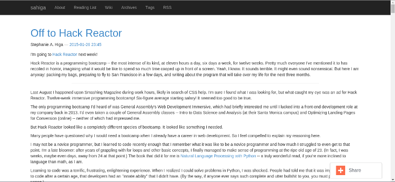

At the risk of losing all my design cred, I'll admit I put practically no effort or even thought into the way my blog looked until about a week ago. To put that into perspective: I wrote my first post here in May 2013. For most of the time since that point, it's been some variation of this default Bootstrap theme provided by Nikola, the static site generator I use:
Nikola, while excellent, has slim pickings for themes, and none of them are quite what I want my blog to look like. So when it came time for the big overhaul, I started (almost) from scratch with a new theme.
The process
Nikola themes live within the appropriately named themes directory. My files are structured as follows:
/theme-name
/assets
/css
theme.css
/templates
base.tmpl
index.tmpl
post.tmpl
engine
parent
Here's an overview of what these files do (taken from the Nikola theming reference):
File Name |
Purpose |
|---|---|
theme.css |
Custom CSS |
base.tmpl |
Defines the basic layout for all pages |
index.tmpl |
Defines pages that contain multiple posts (the "index" pages) |
post.tmpl |
Defines an individual post |
engine |
Text file containing the name of the templating engine your theme uses. The two options are mako and jinja. |
parent |
Text file containing the name of the theme from which your theme inherits. Mine inherits from base. |
That's it! I used the similarly bare monospace theme as a guide. You can spruce up your theme with additional templates (see the zen theme for an example), but I decided to keep mine simple.
Now for the fun stuff!
There's another reason why the default theme didn't work that well for my blog: I'm wordy as hell. I don't write posts; I write essays. So, rather than change my style of blogging, I thought I'd pull off an illusion. My main objective in redesigning this blog was to make it resemble a series of digestible sentences, as opposed to the giant wall of text that it actually is.
For inspiration, I looked at Medium, Longreads, Nautilus, Aeon, and all the other beautiful text-heavy sites that have cropped up in recent years.
Fonts
Typefaces can make or break a design. For the headers, I picked Lato, my favorite web font of all time; for regular text, Lora, my other favorite web font of all time. Both are available on Google Fonts. To improve readability, I increased the size of the text and the space between each line.
Colors
The link styles (salmon color + hover transitions) are from an old WordPress theme I created back in 2012, before I became a front-end developer. My CSS may have improved since then, but my visual tastes haven't changed much.
My first pass at the new theme had an entirely white background, which tested poorly. "It's really white," commented one of my Hack Reactor classmates, as he shielded his eyes from the glare.* I subsequently reduced the white space and added a background from Subtle Patterns. I picked a food icon pattern because, well, I love food.
Other changes
I removed the Share button that used to sit in the bottom right corner. It took me forever to figure out how to do this, but all I had to do was uncomment the SOCIAL_BUTTONS_CODE = "" line in conf.py.
Final thoughts
Designs are never finished, but I'm happy with how my blog looks right now. I plan to implement a hamburger menu for smaller screens within the upcoming weeks. If you have any suggestions, or find your viewing experience to be less than optimal, please let me know.
* With much gratitude to my Hack Reactor classmates for giving me the necessary push to redesign my blog.